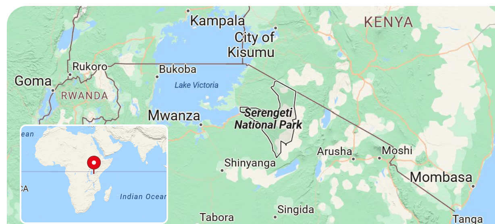
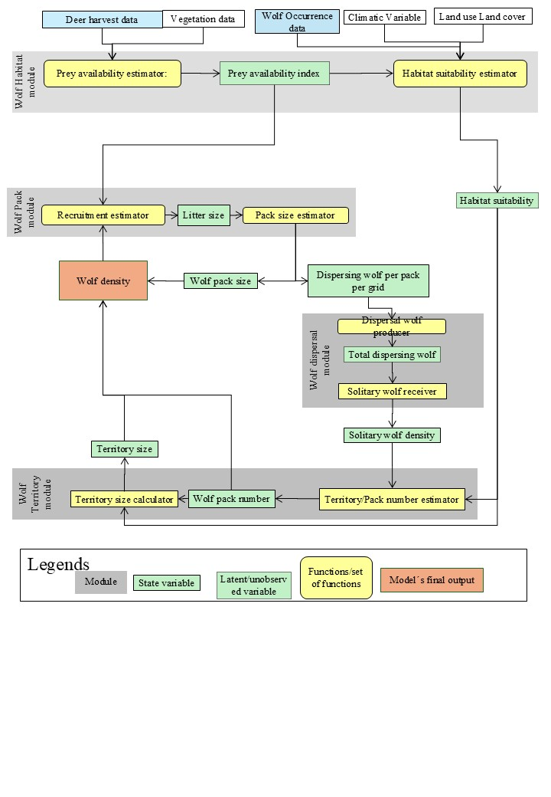

Predicting the probability of avian reproductive success and its components at a nesting site
Ghosh, S., Banerjee, A., Mukhopadhyay, S., Bhattacharya, S., & Ray, S. (2022). Ecological Informatics, 72, 101841.
doi:10.1016/j.ecoinf.2022.101841গবেষণার ফল
স্বচ্ছতা ও পুনরুৎপাদনযোগ্যতার TRACE কাঠামো মেনে, পিয়ার-রিভিউড বাস্তুবিদ্যা জার্নালে যাচাইকৃত ও প্রকাশিত গণনামূলক পদ্ধতি।
মডেলগুলি TRACE কাঠামো মেনে তৈরি এবং স্বাধীন ডেটাসেটে যাচাই করা। প্রথম-লেখক প্রবন্ধগুলির পুনরুৎপাদনযোগ্য কোড GitHub-এ আছে। সাতটি প্রকল্পে বারোটি প্রবন্ধ; প্রথম-লেখক প্রবন্ধগুলি লাল চিহ্নে দেখানো।


Ghosh, S., Banerjee, A., Mukhopadhyay, S., Bhattacharya, S., & Ray, S. (2022). Ecological Informatics, 72, 101841.
doi:10.1016/j.ecoinf.2022.101841Ghosh, S. (2022). NDC E-BIOS, 2, 63–70.
Ghosh, S., Al Basir, F., Chowdhury, G., Bhattacharya, S., & Ray, S. (2021). Ecological Modelling, 459, 109710.
doi:10.1016/j.ecolmodel.2021.109710

Hymenolepis diminuta (ফিতাকৃমি)
Lactobacillus taiwanensis S29
Lactiplantibacillus plantarum S27
Mandal, S., Mondal, C., Ghosh, S., Saha, S., Ray, M. S., & Lyndem, L. M. (2024). Experimental Parasitology, 259, 108715.
doi:10.1016/j.exppara.2024.108715Mandal, S., Mondal, C., Mukherjee, T., Saha, S., Kundu, A., Ghosh, S., & Lyndem, L. M. (2022). Microorganisms, 10(12), 2328.
doi:10.3390/microorganisms10122328
জৈব ব্যবস্থায় যাচাইকৃত সাধারণীকৃত বৃদ্ধি-বক্র মডেল তৈরির ফলিত গণিত প্রকল্প।
Rana, S., Basu, A., Ghosh, S., & Bhattacharya, S. (2023). Ecological Modelling, 476, 110235.
doi:10.1016/j.ecolmodel.2022.110235Roy, T., Ghosh, S., Saha, B., & Bhattacharya, S. (2022). Scientific Reports, 12, 8998.
doi:10.1038/s41598-022-12719-yRoy, T., Ghosh, S., & Bhattacharya, S. (2022). Ecological Modelling, 470, 109999.
doi:10.1016/j.ecolmodel.2022.109999Roy, T., Ghosh, S., Kundu, S., & Bhattacharya, S. (2021). Bulletin of the Calcutta Mathematical Society, 113(4), 271–308.


Banerjee, A., Rakshit, N., Chakrabarty, M., Sinha, S., Ghosh, S., & Ray, S. (2022). Ecological Informatics, 72, 101837.
doi:10.1016/j.ecoinf.2022.101837

Reja, S., Ghosh, S., Ghosh, I., Paul, A., & Bhattacharya, S. (2022). SN Applied Sciences, 4, 176.
doi:10.1007/s42452-022-05053-5


এই প্রকল্পে তৈরি গবেষণা সরঞ্জাম ও ইন্টারঅ্যাকটিভ অ্যাপ্লিকেশন রয়েছে গবেষণা সরঞ্জাম পাতায়।
এই গবেষণায় প্রক্ষেপিত ভূমি-ব্যবহার ও জলবায়ু দৃশ্যকল্পে স্ক্যান্ডিনেভিয়া জুড়ে ধূসর নেকড়ের (Canis lupus) ভবিষ্যৎ ঘনত্ব পূর্বাভাসের জন্য একটি হাইব্রিড গ্রিড-ভিত্তিক জনতাত্ত্বিক–স্থানিক মডেল তৈরি করা হয়েছে। ১৯৬০-এর দশকে প্রায় বিলুপ্তির পর নেকড়ে স্বাভাবিকভাবে স্ক্যান্ডিনেভীয় বোরিয়াল বনে ফিরে এসেছে; কিন্তু মানুষ-অধ্যুষিত ভূদৃশ্যে কতগুলি দল সহাবস্থান করতে পারে তা বোঝা বাস্তুতান্ত্রিক সুফল ও সামাজিক গ্রহণযোগ্যতার ভারসাম্যের জন্য অত্যন্ত গুরুত্বপূর্ণ। মডেলটি ৫০ × ৫০ কিমি গ্রিডে, বিভিন্ন স্থানিক স্কেলে কার্যকর চারটি সংযুক্ত মডিউলকে একত্র করে: (১) নেকড়ে আবাসস্থল মডিউল — হরিণ শিকার (হার্ভেস্ট) তথ্য, উদ্ভিদ-আচ্ছাদন ও ভূমি-ব্যবহার/ভূমি-আচ্ছাদন থেকে শিকারের প্রাপ্যতা অনুমান করে এবং জলবায়ু চলকের সঙ্গে মিলিয়ে আবাসস্থল উপযোগিতা সূচক তৈরি করে; (২) নেকড়ে দল মডিউল — আবাসস্থল উপযোগিতা ও শিকারের প্রাপ্যতা থেকে বাচ্চার সংখ্যা ও বাচ্চার বেঁচে থাকার মাধ্যমে রিক্রুটমেন্ট (নতুন সদস্য সংযোজন) অনুমান করে, যা থেকে প্রতিটি গ্রিড সেলে দলের আকার ও নেকড়ের ঘনত্ব পাওয়া যায়; (৩) নেকড়ে ডিসপার্সাল মডিউল — প্রতিটি দল থেকে এক বছর বয়সীদের ডিসপার্সাল হিসাব করে, আবাসস্থল উপযোগিতার ভিত্তিতে ডিসপার্স করা নেকড়েদের উপযুক্ত গ্রহীতা গ্রিডে পাঠায় এবং নতুন দল গঠনের জন্য একাকী নেকড়ের ঘনত্ব অনুমান করে; এবং (৪) নেকড়ে এলাকা মডিউল — আবাসস্থল উপযোগিতার অপেক্ষক হিসেবে এলাকার আকার অনুমান করে এবং প্রতিটি গ্রিড সেল কতগুলি দল ধারণ করতে পারে তা হিসাব করে। মডেলটি SKANDULV কর্মসূচির দীর্ঘমেয়াদি পর্যবেক্ষণ তথ্যে (১৯৯৯–২০১৫) প্রশিক্ষিত এবং স্বাধীন তথ্যে (২০১৬–২০২৪) যাচাইকৃত। একাধিক SSP-RCP দৃশ্যকল্পে পূর্বাভাস তৈরি করে তিনটি অনুকল্প পরীক্ষা করা হয়: ভবিষ্যতে বন-আচ্ছাদনের পরিবর্তন এলাকার গড় আকার বাড়াবে, উষ্ণতর শীত এলাকার কেন্দ্রীভবনকে উত্তরে সরাবে, এবং স্ক্যান্ডিনেভিয়া জুড়ে সামগ্রিক নেকড়ে ঘনত্ব বাড়বে।

এই ব্যবস্থার ইন্টারঅ্যাকটিভ সিমুলেটর AlderIPM-Sim রয়েছে গবেষণা সরঞ্জাম পাতায়।
Ghosh, S., & Singh, S. (2026). Frontiers in Applied Mathematics and Statistics, 12, 1831903.
doi:10.3389/fams.2026.1831903